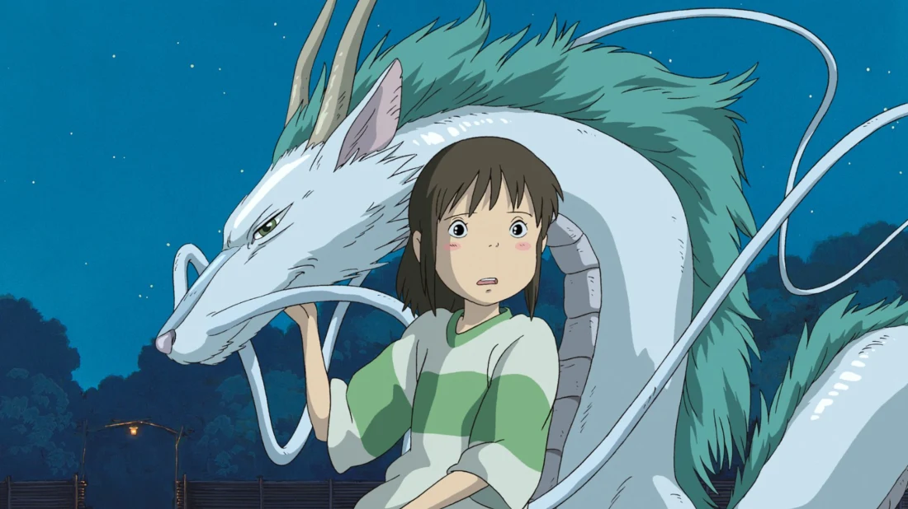

ANIME PAGE
ANIME FACTS
The first animated film released in Japan was in late 1916, which was made out of chalk.
In Japan, more paper is used to print out mangas, rather than toilet paper.
In Japanese, manga means whimsical pictures.
The anime, Death Note, was banned in China. The reason why is, because kids used to buy notebooks to write the names of people they hated and wished them to die.
60% of the world's animation is anime.
HISTORY BEHIND ANIME MOVIES
Have you ever heard of the anime, Spirited Away? Well here are some interesting details you might not have known about the movie.
When Chihiro begins to work at the bath house, Yubaba asks her to change her name.
In Japan, this is a very common practice with prostitutes. Chihiro is given the name Sen.
Chihiro is hired as a yuna. In Japanese, this is known as a bath house prostitute.
And the whole reason Chihiro ends up working in the bath house, is because of her parents.
Her parents turned into pigs, after eating food that was not theirs. Many people believe Chihiro was sold to the bath house, due to her parents.
